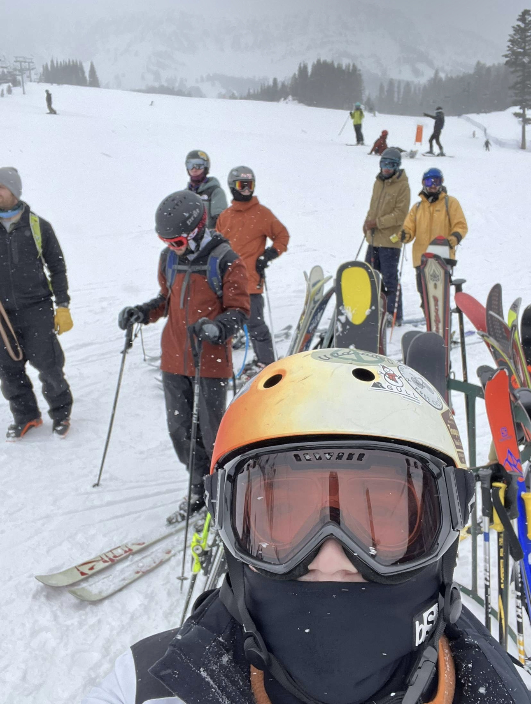
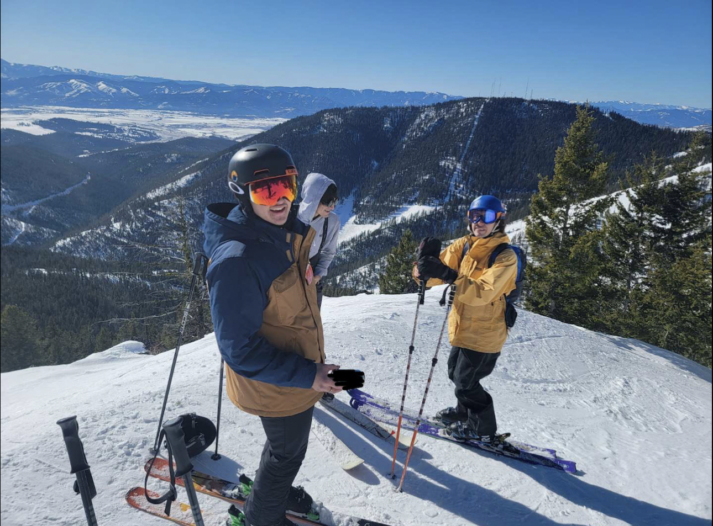

Skiing Montana

Skiing in Bozeman is (in my opinion) the best place in Montana to ski. Going to the ski hill Bridger Bowl, It's a sure fire way to have one of the best ski days of your life. I was blessed to grow up in bozeman and experience the hill day after day. It was a slap to the face when I decided to ski somewhere else expecting the same level of snow.

Skiing in Missoula is not too far behind bozeman in terms of good skiing. Moving from bozeman to Missoula for college, I was skeptical at first about the potential for skiing here, though I was pleasently surprised by Snowbowl, as it has great skiing. I may be biased, but I still believe that Bozeman has the best ski hill in Montana.